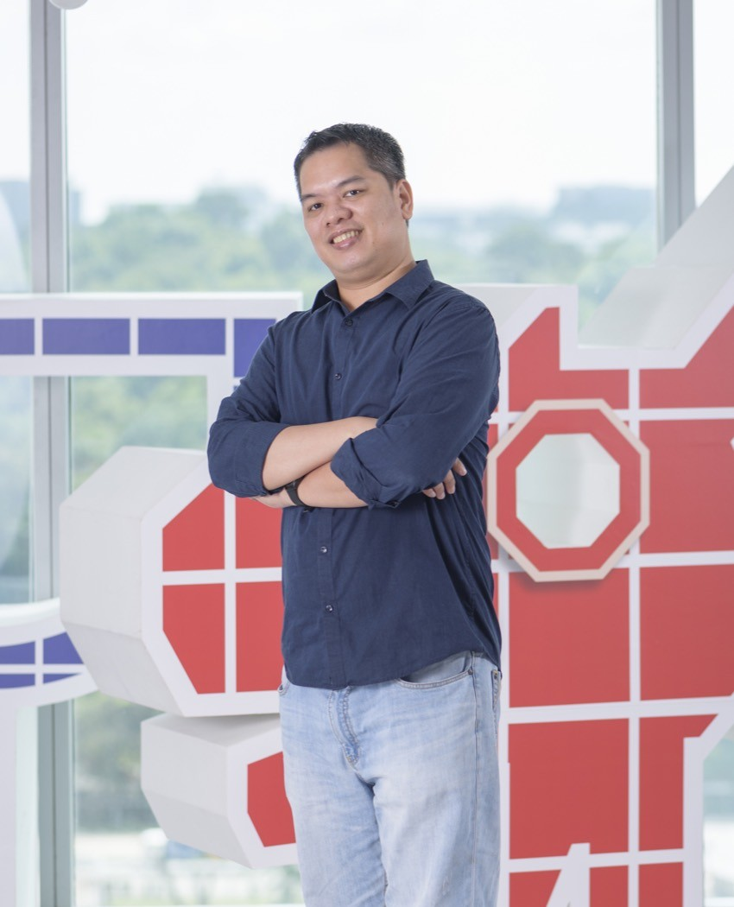

Lester Santiago Soriano
Staff Software Engineer
I’m a software engineer with around 21 years of experience, mainly focused on backend engineering, distributed systems, and financial technology. I’ve spent approximately 11 years working with Go, building and maintaining backend services and microservices in production.
I started my career working on different software systems, and over the years, I’ve had the opportunity to work in banking, fintech, and payments companies like Security Bank, MatchMove, and Red Dot Payment, where I gained experience building online banking systems, financial platforms, digital wallets, and payment-related services.
Currently, I’m working at NTUC Enterprise as a Staff Software Engineer. My work is primarily focused on backend development using Go, GCP, PostgreSQL, and microservices. One of the major projects I’ve worked on is our eVoucher platform, where I was involved in the backend design, development, integrations, and overall delivery of the system.
Aside from writing code, I also enjoy contributing to system architecture, technical decisions, code quality, and mentoring other engineers. I like being hands-on while also working closely with Product and other teams to understand requirements and find practical technical solutions.
I’m especially drawn to work on core banking and payments infrastructure, and to helping build products from an early stage. That’s where my background in fintech, payments, Go, and distributed systems can make the biggest difference.
